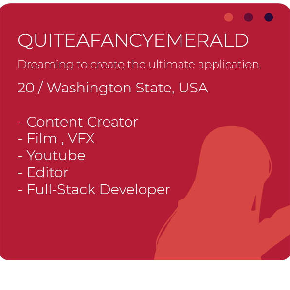

/ The official portfolio for QuiteAFancyEmerald /
Based in Washington State, I am an aspiring filmmaker and content creator with over 19K subscribers on YouTube. I have a passion for producing dynamic visual effects and creating videos with excellent cinematic editing. Additionally, I enjoy working on development projects as a student, specializing in web development and video production.
